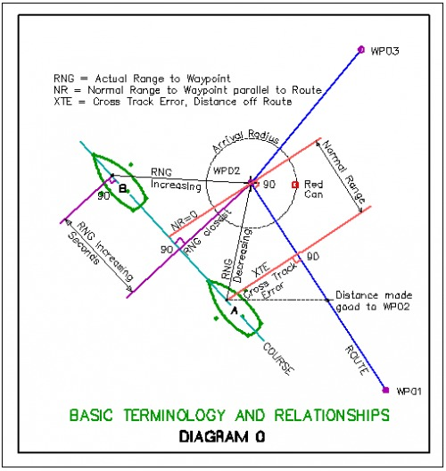
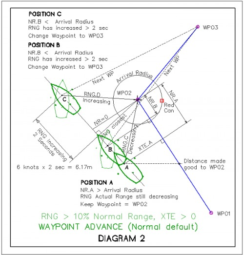
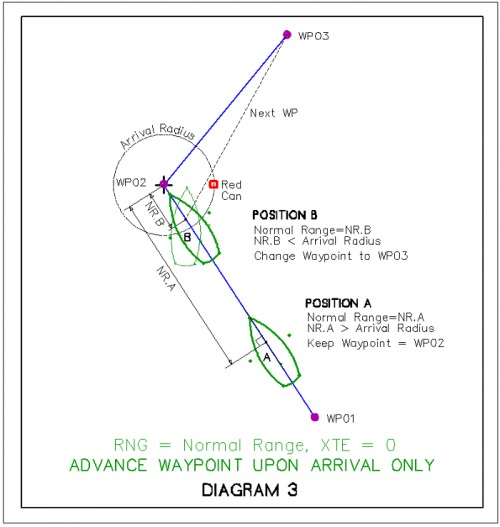
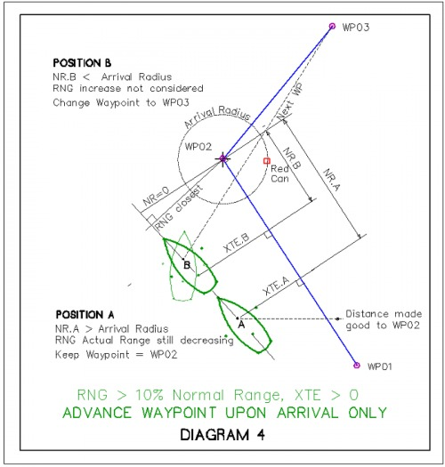

Route to Autopilot
Send a Route to the Autopilot, the basics
If an autopilot is connected to an output port, as defined in the Options→Connections tab, and a route is active, OpenCPN sends NMEA RMB, RMC, and APB sentences to the A/P.
Read more in Options > Connections
Sending an Active Route to an Autopilot
in Options > Data Connections (at the bottom) for more information about connections and testing.
Note that a Connections Output Port must be configured to send ECRMB, ECRMC and ECAPB NMEA sentences to the Auto Pilot.
Also read about the Activate Route & Active Route Console and Active Route Console Window - Showing Active Leg Data in Marks and Routes towards the bottom.
It is essential to have turned on an Active Route in order to send waypoints to the Autopilot.
Waypoint Advance
OpenCPN automatically shifts to the next waypoint in the route using an arrival radius of 0.05 miles (= 92.6 m) by default. This value can be changed in Options→Ships→Own Ship. The arrival radius can be adjusted in each waypoint properties dialog as well.
This works fine in the general case. The A/P is watching the NMEA stream. It sees a new destination lat/lon, and new heading to steer, and then asks the user for confirmation to make the turn. Raytheon/Autohelm works this way.
Simulation & Testing - Short description
To create outgoing ECxxx messages make a (left click menu) “Navigate to here” to a arbitrary point. You may need to filter outgoing sentences on the network connection to only send “EC” (and filter out the same on the incoming side to avoid feedback) so you don't receive them and then send duplicates. The information is scattered so use your browser to search for “autopilot”.
Autopilots and Routes, the details.
Please read Advance route waypoint on arrival only first. Here is a detailed discussion of Options→Ships→OwnShip→Advance route waypoint on arrival only. With an Active Route, in the Active Route Console “This Leg” is visible near the upper right corner of the screen in the console:

RNG (actual range) Distance to the next waypoint.
NR (normal range) Distance from destination waypoint to a line orthagonal to or at right angles to the current route segment which passes through ownship. When shown, NR is after RNG.

There are two general conditions:
1. RNG=NR On course with no cross track error (XTE=0)
2. RNG>NR Off course (sailing perhaps) with cross track error (XTE>0)
When the difference is greater than 10% both values are shown in “RNG”
The “normal” range is the second number shown. 1.88 in this case.
The four diagrams below represent four different conditions:
1. RNG = NR and XTE=0 (Boat is on the route)
2. RNG > NR and XTE>0 (Boat is off the route), which corresponds with the dialog shows both RNG and NR (When there is a 10% difference between NR and RNG).
Additionally Waypoint Advance (Default and Option) Alternatives:
3. Waypoint Advance (Normal default).
4. Advance Waypoint upon Arrival only. (Option checked)
Waypoint Advance (Normal default)
When following a Route OpenCPN normally decides to advance to the next waypoint if at least one of the following two conditions apply.
- NR (normal range) is less than the declared arrival radius. OR
- RNG (actual range) is increasing for 2 seconds. Ownship is moving away from the target waypoint, and has been for more than two seconds.
Waypoint Advance (Normal default) when Range (RNG) = Normal Range (NR) and XTE=0 or near 0
Waypoint Advance (Normal default) when Range (RNG) is 10% > Normal Range (NR) and XTE >0

Option: Check Advance route waypoint on arrival only. With this activated., OpenCPN only advances the route to the next waypoint, if condition 1 above is true (NR<Arrival Radius). Condition 2 is ignored.
Advance route waypoint on Arrival only (is checked) when Range (RNG) = Normal Range (NR) and XTE=0 or close

Advance route waypoint on Arrival only (is checked) when Range (RNG) is 10% > Normal Range (NR) and XTE>0
[Editor's Note: Diagram needs correction. Boat B location Normal Range should be shown at the arrival radus with boat staring turn.]

Advance Waypoint upon arrival only (option) is useful when sailing and you can't lay the next mark and are forced to tack to reach it. It allows a ship to move away from waypoint without automatically advancing to next waypoint.
Note: Waypoint Advance (normal default) is dependent on NR < Arrival Radius OR RNG increasing more than 2 seconds, so what this option does is overide that second condition.
Advance Waypoint upon arrival only (option) ensures that the next current waypoint remains active
1. NR<Arrival Radius is reached OR
2. A line just inside of the Arrival Radius which is also “normal” or perpendicular to the marked route is reached. In this case there is a cross track error.
On the other hand….
Waypoint Advance (normal defualt) helps you if you really want to cut a corner by a large distance, in such a way that the “normal range” will never be less than (Arrival radius). The second condition, RNG increases for > 2 seconds, willl automatically advance the route to the next waypoint in this case.